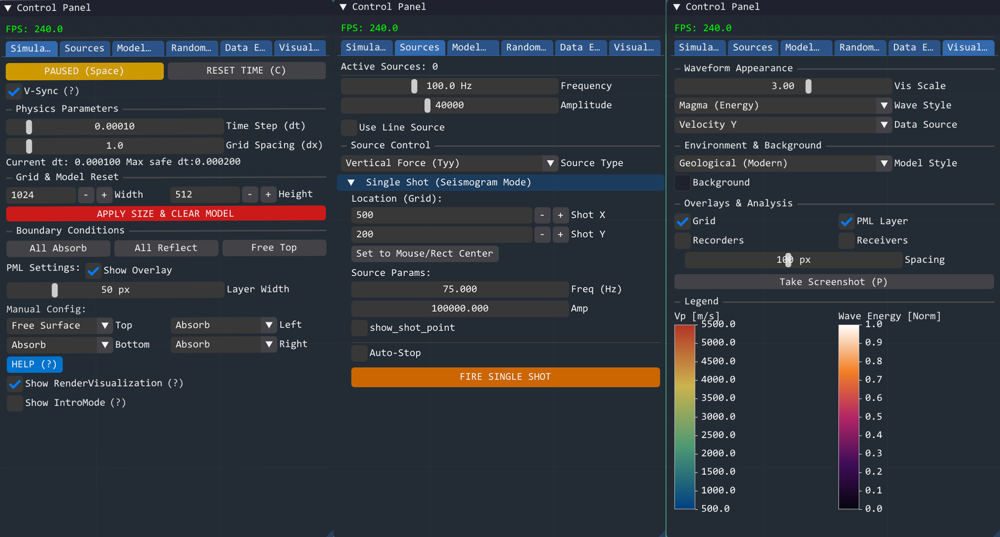
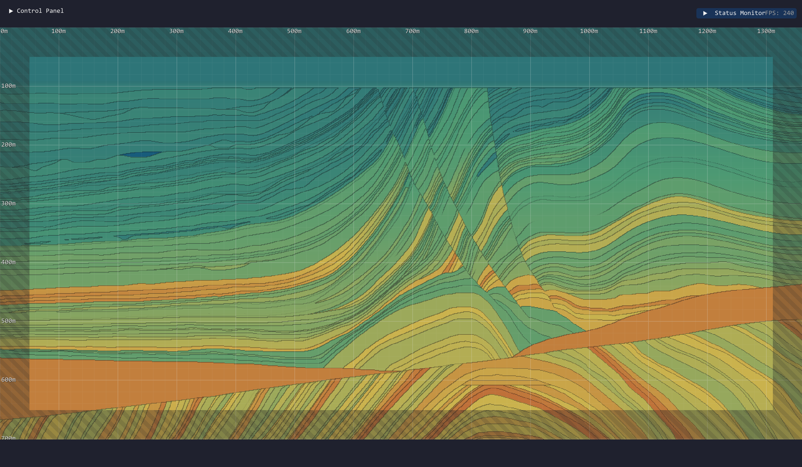
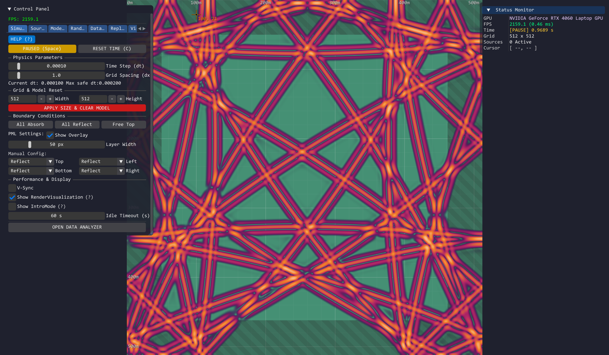
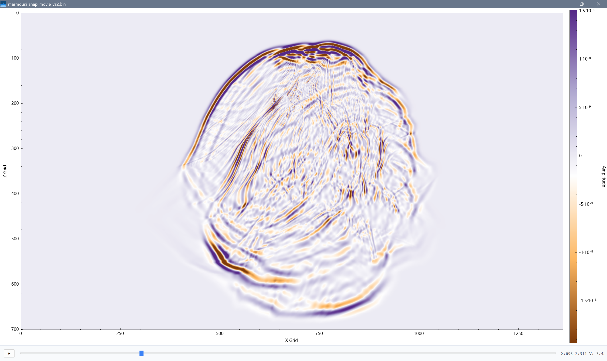
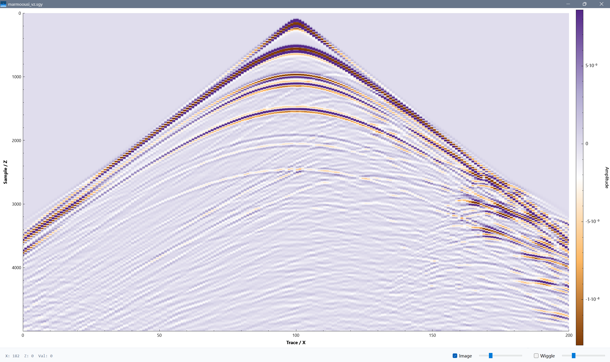
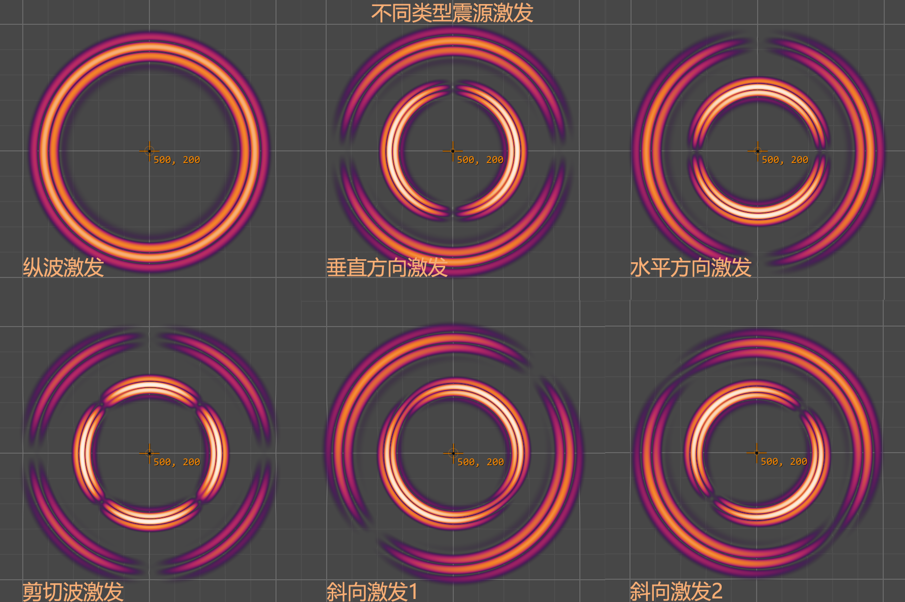
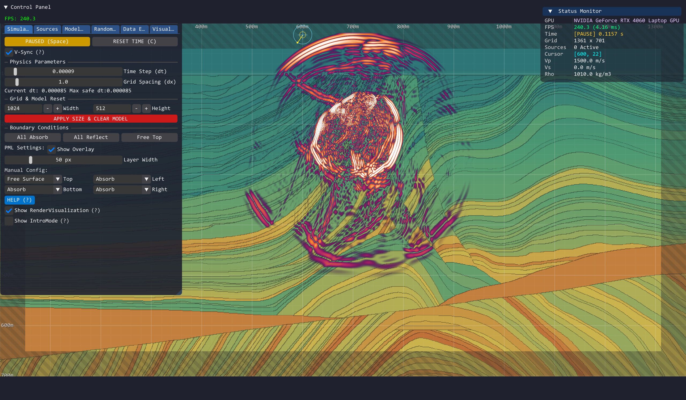

基于 GPU 原生架构的高性能二维弹性波动力学模拟平台
HPEW-Sim v3.0: High-Performance Elastic Wave Simulator
基于 GPU Compute Shader 的高阶精度弹性波场模拟与成像系统
摘要 (Abstract)
HPEW-Sim v3.0 是一款专为计算地球物理学、地震勘探及波动物理教学设计的下一代数值模拟平台。该系统针对传统 CPU 串行计算在处理大规模网格时的性能瓶颈，创新性地采用基于 OpenGL Compute Shader 的 GPU 原生并行架构，实现了在千万级网格规模(实现了在 1600 万 (1.6 $\times$ 10^7) 网格节点规模)下的实时、高精度弹性波场模拟。系统内核集成了空间 8 阶/时间 2 阶交错网格有限差分（FDTD）算法，有效抑制了数值频散。此外，平台融合了逆时偏移（RTM）成像、实时波场分离及艺术化渲染技术，为复杂介质中的波传播研究提供了一站式的高性能解决方案。
界面展示 (Interface Gallery)
欢迎页面
模拟主界面
模拟参数调整面板

重采样后 Marmousi 模型显示

模拟计算性能展示（NVIDIA GeForce RTX 4060 Laptop GPU）
512x512 分辨率下帧率超过 2000 FPS，长时模拟无数值频散。

多尺度模型计算性能对比
2048x2048 分辨率下稳定 240+ FPS，4096x4096 分辨率下稳定 60+ FPS。
内置数据分析模块
Marmousi 模型波场快照与可视化

Marmousi 模型合成地震记录

不同类型震源激发对比 (主频 100Hz)

实时交互：鼠标点源激发
Marmousi 模型正演模拟过程

检波器阵列布设与曲界面模型模拟
1. 核心技术架构 (Core Technology Architecture)
本系统并非简单的数值求解器，而是一个集成了高性能计算（HPC）、交互式建模与科学可视化的综合平台。
1.1 高阶数值离散内核 (High-Order Numerical Kernel)
为了在有限的计算资源下获得极高的模拟精度，本系统采用了 高阶交错网格有限差分 (Staggered-Grid FDTD) 格式：
- 空间离散：采用 8 阶精度 (8th-Order) 中心差分算子。相比传统的 2 阶或 4 阶格式，该算法在长距离波场传播中能将数值频散 (Numerical Dispersion) 降至理论极限，显著提升了波形的保真度。
- 时间推进：采用 2 阶精度 的蛙跳格式 (Leapfrog Integration)，确保了计算的稳定性与效率。
1.2 GPU 原生并行加速 (GPU Parallel Acceleration)
系统底层完全基于 OpenGL 4.3+ Compute Shader 构建，充分利用现代显卡的大规模并行算力：
- 细粒度并行：每个网格节点对应一个 GPU 线程，单帧并行处理能力超过 $10^6$ 个节点。
- 零拷贝渲染：物理计算与图形渲染共享显存数据，避免了 CPU-GPU 之间的高延迟数据传输，实现了毫秒级的物理步进与可视化。
1.3 全波场物理求解 (Full-Wavefield Physics)
求解完整的一阶速度-应力弹性波方程组，支持复杂介质中的多波型耦合传播：
- 纵波 ($V_p$) 与 横波 ($V_s$) 的独立传播与相互转换。
- 瑞利面波 (Rayleigh Wave)：通过精确的自由表面 (Free Surface) 边界条件（法向应力归零），准确模拟沿地表传播的面波效应。
- CPML 吸收边界：引入卷积完美匹配层（Convolutional Perfectly Matched Layer），有效消除截断边界的人工反射。
2. 功能模块详解 (Functional Modules)
2.1 正演模拟与反演成像 (Forward Modeling & RTM)
- 复杂介质正演：支持在层状介质、断层、空洞等复杂地质模型中进行波场传播模拟。
- 逆时偏移成像 (RTM)：集成了完整的 RTM 流程，包括正演波场存储、反向传播与互相关成像条件。引入 拉普拉斯滤波 (Laplacian Filtering) 技术，有效压制低频噪声，显著提升地下反射结构的成像分辨率。
2.2 数据采集与观测系统 (Data Acquisition)
内置高精度合成地震记录系统，支持灵活的观测系统设计：
- 自定义阵列：支持自定义检波器的位置、深度及道数。
- 工业级导出：支持生成标准地震剖面，并可导出为 CSV 或工业标准 SEGY 格式，便于后续处理与分析。
2.3 震源系统 (Source System)
- 多样化震源：支持单点脉冲、线性震源、爆炸源及旋转定向力源 (Tensor Rotation)，可模拟不同类型的震源机制。
- 随机微震模拟：支持在指定区域内生成随机时空的微震事件，用于模拟声发射或诱发地震序列。
3. 可视化与交互设计 (Visualization & Interaction)
3.1 多维波场分析
系统提供了丰富的波场属性查看模式：
- 分量切换：实时切换显示速度场 ($Vx, V_y$) 或应力场 ($\sigma{xx}, \sigma{zz}, \sigma{xz}$)。
- 波场分离：基于散度 ($\nabla \cdot \mathbf{v}$) 和旋度 ($\nabla \times \mathbf{v}$) 算子，实时分离并显示纯 P 波与纯 S 波。
- 频谱分析：内置实时 FFT 频谱分析模块，用于监测波场的频率成分。
3.2 艺术化科学渲染 (Scientific & Artistic Rendering)
独创多种渲染模式，兼顾科学性与审美：
- Magma 热力图：高对比度显示波场能量分布。
- Van Gogh 星空模式：利用流线与厚涂质感算法，直观展示波前的传播方向与动态流场，具有极高的教学演示价值。
3.3 交互式建模 (Interactive Modeling)
摒弃了传统的脚本建模方式，提供所见即所得的交互工具：
- 画笔工具：支持直接在网格上绘制高速岩体、低速流体或反射壁。
- 参数实时修正：在模拟运行过程中，可实时修改介质的物理属性 ($V_p, V_s, \rho$)，即时观察波场响应的变化。
4. 系统稳定性保障 (System Stability)
针对高阶差分算法对时间步长 ($dt$) 的敏感性，系统构建了多重稳定性保障机制：
- 数值溢出检测 (Explosion Detection)：通过硬件级原子操作实时监控计算结果。
- 自动熔断机制：一旦检测到数值发散（NaN 或 Infinity），系统将自动暂停模拟并提示参数修正建议，防止显卡驱动崩溃。
5. 数学原理 (Mathematical Formulation)
5.1 控制方程
在二维笛卡尔坐标系 $(x, z)$ 下，弹性波传播遵循以下守恒定律：
A. 运动方程 (Momentum Equations):
描述质点加速度与应力梯度的关系：
B. 本构方程 (Constitutive Equations):
描述应力变化率与应变率（速度梯度）的关系：
其中，$vx, v_z$ 为质点振动速度；$\sigma{xx}, \sigma{zz}, \sigma{xz}$ 为应力张量分量；$\rho$ 为介质密度；$\lambda, \mu$ 为拉梅常数，由纵波速度 $V_p$ 和横波速度 $V_s$ 导出：
5.2 数值离散方案
- 网格策略：采用标准交错网格 (Standard Staggered Grid)，将速度分量定义在网格边中点，应力分量定义在网格中心，天然满足中心差分格式。
- 空间差分算子：系数 $C_n$ 经泰勒展开优化，确保在 8 个网格点范围内达到 8 阶精度，极大地减少了数值色散误差。
6. 应用前景 (Potential Applications)
- 资源勘探 (Resource Exploration)：
- 作为全波形反演 (FWI) 的高效正演算子，生成海量带标签的训练数据。
- 辅助地震观测系统设计与照明度分析。
- 地震学研究 (Seismology)：
- 模拟地壳深部结构（如莫霍面、俯冲带）的波场反射与转换特征。
- 研究复杂地表起伏条件下的瑞利面波传播规律。
- 无损检测 (NDT)：
- 仿真超声波在混凝土、金属构件中的传播，辅助识别裂缝与空洞缺陷。
- 科学教育 (Education)：
- 利用其强大的可视化能力，将抽象的波动方程转化为直观的动态图像，用于物理教学与科普展示。